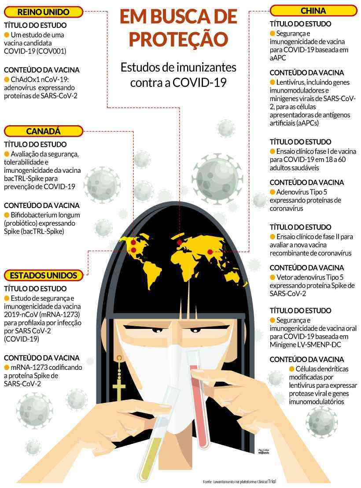

O primeiro-ministro do Canadá, Justin Trudeau, foi enfático, na semana passada, ao dizer que as pessoas, em todo o mundo, não terão vidas normais enquanto não for descoberta vacina que imunize contra a COVID-19. Nessa direção, foi iniciada corrida internacional para a descoberta científica que terá importante peso para a humanidade, incluindo a saúde e equilíbrio socioeconômico.
A pedido do Estado de Minas, foi feito levantamento exclusivo sobre os estudos mais avançados em todo o mundo. Com a assessoria da virologista Jordana Coelho dos Reis, pesquisadora do Departamento de Microbiologia da UFMG, chegamos a sete estudos para vacinas em fase de testes em humanos. A produção de uma nova vacina passa por etapas: testes in vitro, testes em camundongos e ensaio clínico, sua última fase.
O começo do fim está próximo: o médico belga Paul Stoffels, vice-presidente do Comitê Executivo e Chief Scientific Officer da Johnson & Johnson (J&J), afirma que, entre janeiro e fevereiro de 2021, as primeiras doses da vacina contra a Covid-19 devem estar disponíveis em caráter de urgência para, por exemplo, profissionais de saúde que estão na linha de frente do combate ao novo coronavírus.
“Estamos expandindo nossas estruturas para conseguir produzir dezenas de milhões de vacinas de alta qualidade mensalmente, mas é um trabalho em processo”, disse Stoffels, com exclusividade ao NeoFeed, em sua primeira entrevista a um veículo de comunicação latino-american. Continue lendo ...
No meio da pandemia que se alastrou pelo mundo todo há algumas boas notícias. Confira no vídeo abaixo
O Ministério da Saúde começou a distribuir, na última quarta-feira (15), o total de 10,2 milhões de Equipamentos de Proteção Individual (EPIs) usados por profissionais de saúde no atendimento a pacientes infectados por coronavírus. A distribuição faz parte da 6ª rodada de entregas a todo o país, que se encerra na próxima terça-feira (21). Estão sendo distribuídos 67.981 unidades de álcool em gel 70%, 426.587 aventais, 2,1 milhões de luvas, 826.171 máscaras N95, 6,4 milhões de máscaras cirúrgicas, 3.280 óculos e 412.600 toucas. Também foram enviados R$ 746,2 mil para profissionais de segurança. Continue lendo...
Brasil tem 2.347 óbitos e 36.599 casos confirmados da doença. Em São Paulo, bolsonaristas foram às ruas pedir pelo fim da quarentena, enquanto em Brasília, Bolsonaro defendia a suspensão do isolamento. No Amazonas, Governo fala em “exaustão dos profissionais”. Continue lendo...
Crise do coronavírus tem mais ganhos do que perdas para o agronegócio. Ouça o audio.